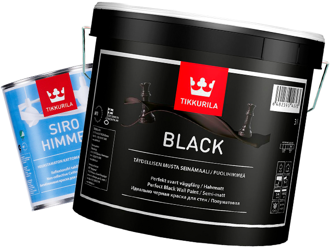

Компания "Студия цвета" Официальный дистрибьютор бренда лакокрасочных изделий Tikkurila на территории Казахстана.
Промышленные краски Tikkurila оптом
доставим за сутки cо склада!
Скидка на первый заказ — 10%!
доставим за сутки cо склада!
Скидка на первый заказ — 10%!
- Привезем любые объемы красок.
Хватит покрасить целый завод. - Если краска отслоится или слезет—
замена материалов за наш счёт - Подбор нужного вам цвета на
компьютер за несколько минут
Закажите бесплатную консультацию специалиста по промышленным краскам и получите доступ к закрытой распродаже красок Tikkurila!
